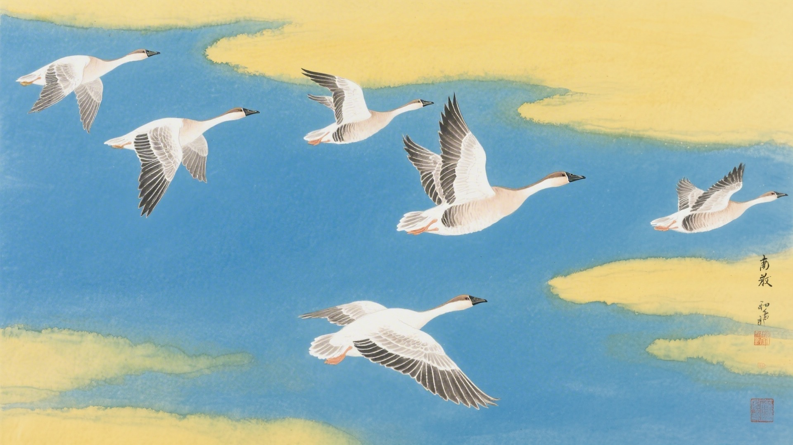
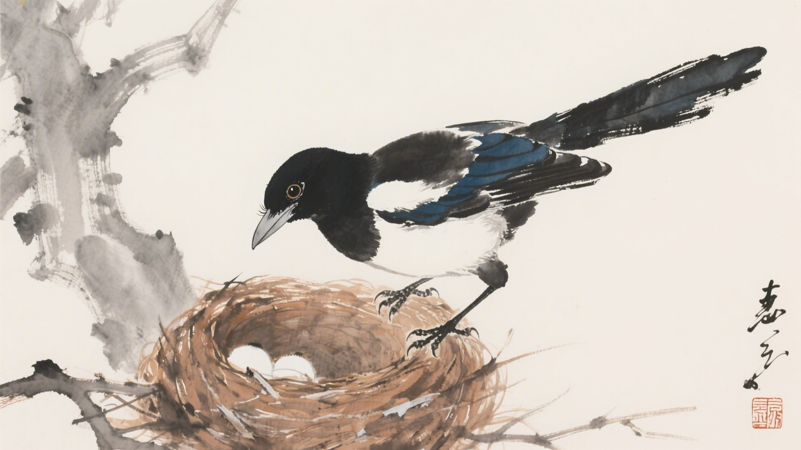
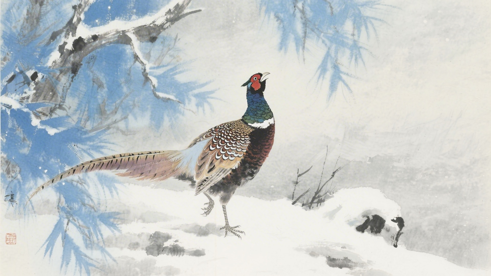
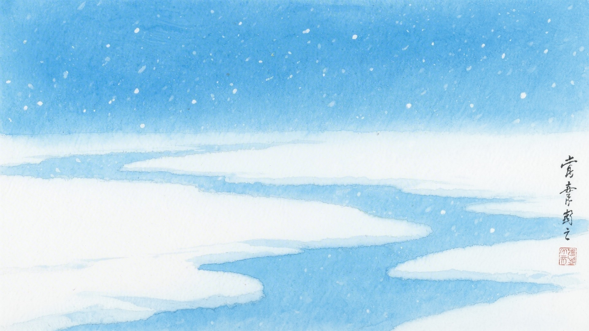
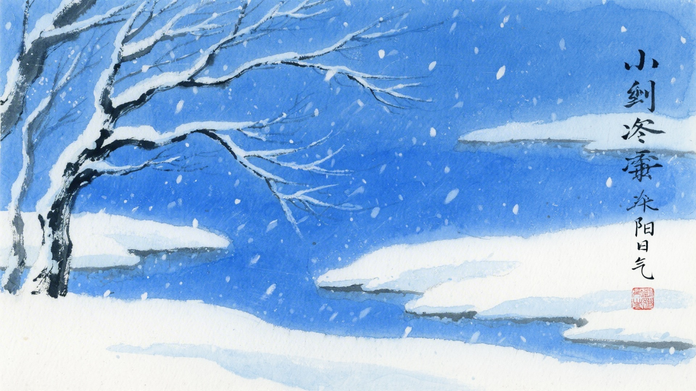

《中国传统色：故宫里的色彩美学》一书中为什么把下面这些颜色归入小寒节气？
酂白、断肠、田赤、黄封
丁香褐、棠梨褐、朱石栗、枣褐
秋蓝、育阳染、霁蓝、獭见
井天、正青、扁青、䌦色
小寒时节，大雁开始北归，喜鹊开始筑巢，野鸡开始鸣叫。古人说小寒有三候：雁北乡，鹊始巢，雉始雊。这十六种颜色，便从这三候里来。
小寒的"小"，是冷还不到极致。虽然冷，但已经有了春天的消息。大雁往北飞了，喜鹊搭窝了，野鸡叫了。颜色也带着希望，在寒冬里悄悄酝酿。
对应：小寒节气一候"雁北乡"的起、承、转、合四色。
色彩意象：大雁北归，春意暗涌。
从纯白到深黄，是寒冬里的一点暖色，也是小寒时节最轻柔的过渡。

对应：小寒节气二候"鹊始巢"的起、承、转、合四色。
色彩意象：喜鹊筑巢，生机勃勃。
从褐紫到深褐，是冬天树枝的颜色，也是小寒时节最深沉的底色。

对应：小寒节气三候"雉始雊"的起、承、转、合四色（其一）。
色彩意象：野鸡鸣叫，阳气上升。
从淡蓝到青灰，是冬天天空的颜色，也是小寒时节最清冷的画面。

对应：小寒节气三候"雉始雊"的起、承、转、合四色（其二）。
色彩意象：阳气始生，春天不远。
从深青到赤青，是冬天向春天过渡的颜色，也是小寒时节最内敛的画面。

小寒这天，天气冷得厉害。出门哈一口气，都变成白雾。颜色也冻住了，白的是雪，褐的是树，青的是天。它们挤在一起取暖，等着春天。

颜色也懂得等待。它们在最冷的日子里，静静地数九。一九、二九、三九……数着数着，春天就近了。颜色知道，再冷的冬天，也有过去的时候。
（以上解读不代表原书观点）